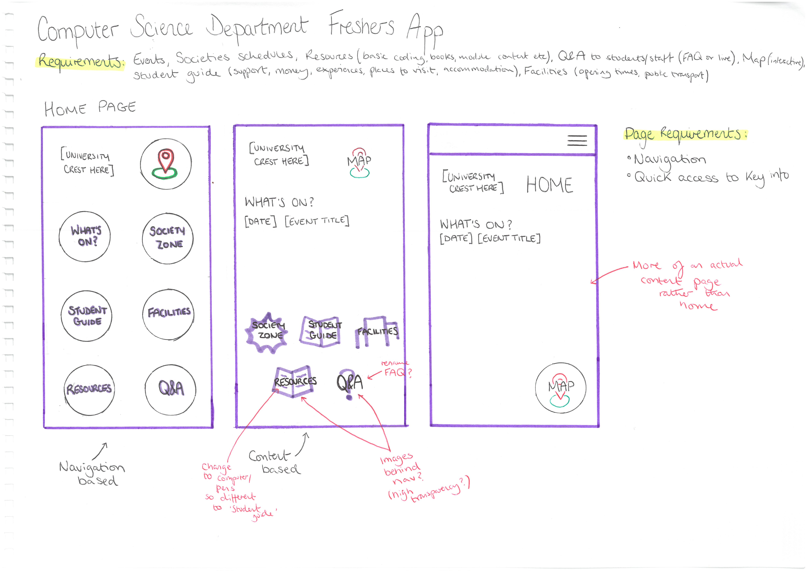

Final Project
Using an Agile approach, I conducted user research to design and develop a web application for First Year Computing students.
The Initial Design:
The final application includes:
- Information on Societies
- A Student Guide
- Facilities
- Module Resources
- FAQ
- Map
View the live application here!